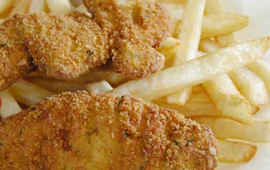

A new study found that some American fast food contains muchhigher
levels of unhealthy trans fats than the same food sold in othercountries.
For decades, processed food manufacturers and restaurants have usedhydrogenated oil containing trans fats. This hydrogenated oil hasan extended shelf life and can be reused longer for frying. Butresearchers determined that oil high in trans fat contributes toheart disease, and efforts are underway to eliminate these fats asmuch as possible.
Now a report just published in the New England Journal ofMedicine tested McDonald's chicken nuggets and french fry combomeals purchased in 20 different countries. In New York City, themeal contained 10 grams of trans fat, versus 3 grams in Spain andless than 1 gram in Denmark.
The cooking oil used for the McDonald's french fries in the U.S.contained 23 percent trans fatty acids, mainly from partiallyhydrogenated vegetable oil. The low levels in Denmark are theresult of legislation restricting the use of industrially producedtrans fatty acids in food to a maximum of 2 percent.
For every 2-percent increase in the amount of calories from transfat, the risk of heart disease increases by 36 percent, accordingto Walter C. Willett, chair of the Department of Nutrition atHarvard University. By replacing that same 2 percent of caloriesfrom trans fat with unsaturated fats, you can reduce the risk ofheart disease by as much as 53 percent.
McDonald's claims that its cooking oils come from local suppliersand the choice is based on consumer preference. But Dr. SteenStender, a cardiologist at Gentofte University Hospital in Denmarkwho worked on the study, says partially hydrogenated vegetable oilsare mainly used to save money because they don't spoil and can bereused.
Michael F. Jacobson, executive director for theCenter for Science in the PublicInterest (CSPI), says, 'while deep-fried foods will always behigh in calories, they do not necessarily have to be bad for yourheart. All restaurants should fry in liquid, non-hydrogenatedvegetable oil like canola or soy. If they did, fried foods wouldbecome healthier overnight. But as long as they continue to usesuch a dangerous artificial frying oil, they should inform theirpatrons.'
Based on FDA data, CSPI estimated that 11,000 to 30,000 lives,perhaps many more, would be saved each year if partiallyhydrogenated oils were replaced with more healthful products. InMay 2004, CSPI petitioned the FDA to ban these oils altogether, andlaunchedTransFreeAmerica.org toorganize a campaign against trans fat.
Processed food manufacturers are now under government mandate todisclose trans fat content on nutrition labels, though restaurantsare not required to provide full nutrition labeling for their food,unless nutrient claims are made, such as 'low fat' or 'low sodium.'Many fast food restaurants will provide nutritional informationabout their products if you ask. For more information on betterfood choices, visit theReal FoodPage onMotherEarthNews.com.
|
 |
|
|